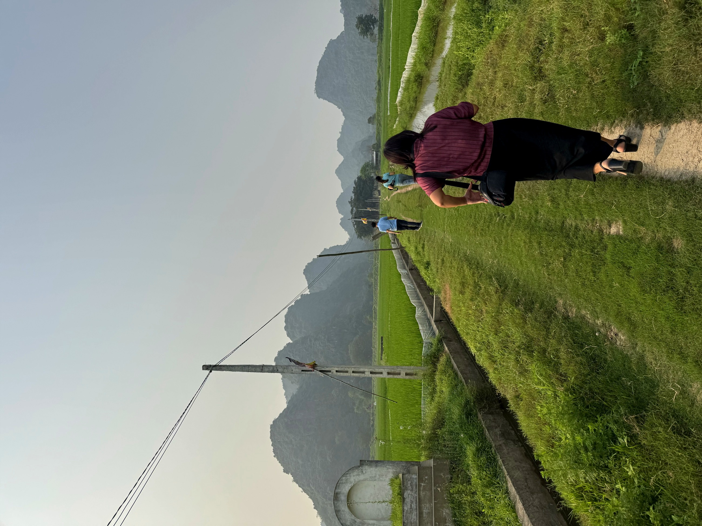
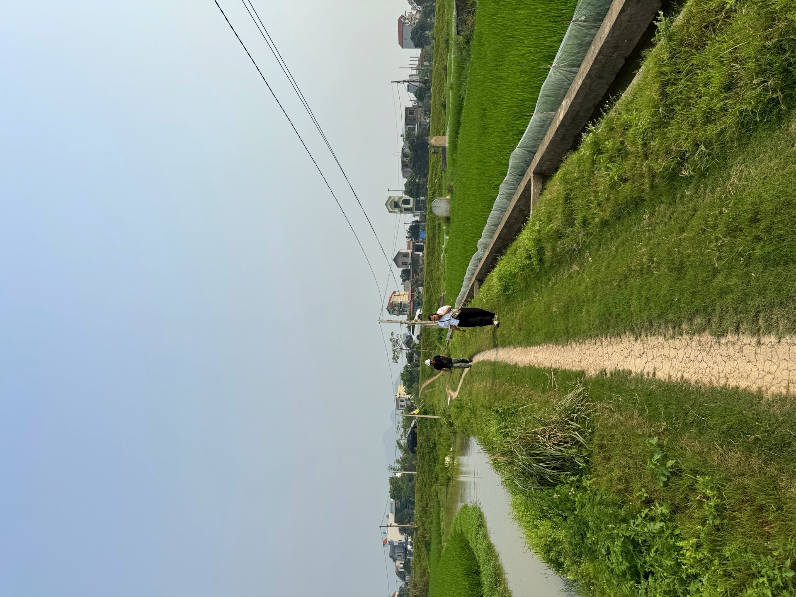

Loại hìnhTypeType
Di tích tâm linhSpiritual Heritage SitesSites de Patrimoine Spirituel

Chùa Tiên ẩn mình lưng chừng núi thuộc thôn Ái Nàng, được dẫn lối bằng hệ thống bậc đá xuyên qua tán rừng và vách núi đá. Sự hiện diện của ngôi chùa gắn với một câu chuyện được dân làng truyền miệng: năm 1958, ông Chu Văn Trác trên đường tìm kiếm mật ong rừng được dẫn lối và tình cờ phát hiện ra ngôi chùa. Từ đó, người dân cùng nhau cải tạo để thờ phụng.
Bên trong chùa là hệ thống nhũ đá được thiên nhiên gọt giũa qua năm tháng thành những kiệt tác độc nhất vô nhị. Không gian chùa giữ được vẻ hoang sơ đặc trưng, hòa cùng cảnh sắc núi rừng và cây cổ bao quanh — tạo nên sức hút đặc biệt cho người muốn tìm đến một nơi tâm linh còn nguyên dấu vết của tự nhiên.
Chua Tien, nestled halfway up the mountain in Ai Nang village, is reached via a system of stone steps winding through the forest canopy and rock faces. The pagoda's presence is linked to a local legend: in 1958, Mr. Chu Van Trac, while searching for wild honey, was guided to and stumbled upon the temple. Since then, villagers have collectively restored it for worship.
Inside the pagoda lies a system of stalactites sculpted by nature over millennia into unique masterpieces. The temple space retains its distinctive pristine beauty, blending with the surrounding mountain scenery and ancient trees — creating a special allure for those seeking a spiritual place still bearing the untouched marks of nature.
La Chua Tien, nichée à mi-hauteur de la montagne dans le village d'Ai Nang, est accessible par un système de marches en pierre serpentant à travers la canopée de la forêt et les parois rocheuses. La présence de la pagode est liée à une légende locale : en 1958, M. Chu Van Trac, alors qu'il cherchait du miel sauvage, fut guidé et découvrit fortuitement le temple. Depuis, les villageois l'ont collectivement restauré pour le culte.
À l'intérieur de la pagode se trouve un système de stalactites sculptées par la nature au fil des ans en chefs-d'œuvre uniques. L'espace de la pagode conserve son aspect sauvage caractéristique, se mêlant au paysage montagneux et aux arbres anciens environnants — créant un attrait particulier pour ceux qui recherchent un lieu spirituel encore marqué par la nature.
| Tham quan, chiêm báiVisit and offer prayers.Visite et recueillement. | Vãng cảnh chùa, dâng hương trong không gian hang nhũVisit the pagoda and offer incense within the awe-inspiring stalactite cave.Visitez la pagode et offrez de l'encens dans la grotte aux stalactites impressionnante. |
| Hướng dẫn tại chỗLocal GuidesGuides Locaux | Kể chuyện phát hiện chùa năm 1958, giới thiệu nhũ đáHear captivating tales of the pagoda's discovery in 1958 and marvel at its stalactites.Écoutez les récits captivants de la découverte de la pagode en 1958 et admirez ses stalactites. |
| Leo bậc đá, khám pháAscend stone steps, discover hidden gems.Grimpez les marches de pierre et explorez. | Hành trình dẫn lối qua bậc đá lên lưng chừng núiA journey leading up stone steps to the mountainside.Un chemin menant par des marches en pierre à flanc de montagne. |
| Chụp ảnh nhũ đáStalactite photographyPhotographie de stalactites | Cảnh quan hang chùa và nhũ đá độc đáoDiscover the unique cave pagoda landscape and stunning stalactites.Admirez le paysage unique de la pagode-grotte et ses stalactites. |
| Tham quan cảnh quan núi rừngExplore mountain and forest sceneryExplorez les paysages de montagne et de forêt | Từ vị trí lưng chừng núi, ngắm tán rừng và núi đá xung quanhFrom a mountainside vantage point, admire the forest canopy and surrounding rocky mountains.Depuis un point de vue à flanc de montagne, admirez la canopée forestière et les montagnes rocheuses environnantes. |


Chùa Tiên hướng tới phát triển thành điểm tâm linh – thiên nhiên đặc sắc trong tuyến Ái Nàng của du lịch cộng đồng Mường Cốc, kết hợp cùng Đền Mẫu Thượng Thiên thành cụm trải nghiệm hành hương – khám phá. Định hướng tiếp theo sẽ cải thiện an toàn lối lên (tay vịn, biển cảnh báo), bổ sung chiếu sáng tối thiểu bên trong hang, và xây dựng nội dung thuyết minh về nhũ đá tự nhiên để nâng cao chất lượng diễn giải cho du khách. Điểm đến Du lịch cộng đồng Mường Cốc, Xã Mỹ Đức – Thành phố Hà NộiChùa Tiên aims to develop into a distinctive spiritual-nature site on the Ái Nàng route of Mường Cốc community tourism, combining with Đền Mẫu Thượng Thiên to form a pilgrimage-discovery cluster. Future directions include improving safety on the ascent (handrails, warning signs), adding minimal lighting inside the cave, and creating interpretive content about natural stalactites and stalagmites to enhance the visitor experience. A Mường Cốc Community Tourism Destination, My Duc Commune – Hanoi City.Chùa Tiên vise à devenir un site spirituel et naturel distinctif sur l'itinéraire Ái Nàng du tourisme communautaire de Mường Cốc, en se combinant avec Đền Mẫu Thượng Thiên pour former un complexe d'expériences de pèlerinage et de découverte. Les prochaines étapes comprendront l'amélioration de la sécurité de l'accès (rampes, panneaux d'avertissement), l'ajout d'un éclairage minimal à l'intérieur de la grotte, et l'élaboration de contenus explicatifs sur les formations rocheuses naturelles pour enrichir l'interprétation pour les visiteurs. Une destination de tourisme communautaire de Mường Cốc, commune de My Duc – ville de Hanoi.